MOMIJI · 11.30
11月30日、紅葉どこ行く？
今年最後の紅葉の日。11時に烏丸御池を出て、昼ごはん・夜の紅葉・晩ごはんまで楽しんで、23時までに烏丸御池に戻る1日コースを9つ考えました。京都の王道から、人の少ない穴場、滋賀まで。行きたいコースを教えてください。
11月30日（月）烏丸御池 11:00発23:00ごろ烏丸御池で解散でんでん・タロちゃん・トシ
どうやって選んだか
ウェザーニュースの京都府・滋賀県の紅葉情報（11月24日時点）で、30日にまだ見頃か、30日までに見頃に入る所だけを残しました。そのうえで、30日（月）の夜に開いているライトアップ・夜間拝観を調べて、夜の紅葉を1日の最後に入れています。お店は月曜に開いている所から選びました。
天気（24日時点の予報）：28日（土）は低気圧が通って全国的に雨、強い雨や強風のおそれ。30日（月）は高気圧に覆われて晴れの予想。28日の雨風で、見頃の終わりかけの所（嵐山の全体・源光庵・叡電もみじのトンネルなど）は一気に散るかもしれません。29日にもう一度確かめます。
9つのコースをくらべる
| コース | 紅葉の確実さ | 夜の紅葉 | 烏丸御池着 | 交通費 | 拝観料のめやす |
|---|
| A東山の王道 | ★★★ | 清水寺（最終日）・高台寺 | 22:11 | 820円 | 約2,300円＋建仁寺 |
| B哲学の道の小さな寺 | ★★★ | 金戒光明寺・永観堂（＋青蓮院） | 21:48 | 670円 | 約2,500円＋α |
| C一乗寺の庭と植物園の夜 | ★★★ | 府立植物園 | 19:49（近くで晩ごはん） | 1,170円 | 約1,800円＋α |
| D嵯峨の静かな寺 | ★★☆ | 宝厳院 | 21:33 | 930円 | 約3,400円 |
| E妙心寺・衣笠・北野 | ★★★ | 北野もみじ苑・二条城 | 21:50 | 1,290円 | 約4,500円＋α |
| F山科・醍醐 | ★★★ | 醍醐寺（予約制） | 21:28 | 1,040円 | 約2,000円＋α |
| G宇治と夜の東寺 | ★★☆ | 天得院・東寺 | 21:21 | 1,250円 | 約2,800円 |
| H滋賀：大津・坂本 | ★★☆ | 日吉大社（無料） | 21:32 | 1,760円 | 約1,300円 |
| I滋賀：百済寺と教林坊 | ★★★ | 教林坊 | 21:43 | 3,060円＋タクシー | 約1,600円 |
交通費・拝観料は大人1人分（交通費はICカード）。時刻はYahoo!路線情報で「2026年11月30日（月）」を指定して調べました。「＋α」は拝観料を確かめきれなかったお寺があるという意味です。
迷ったら：とにかくきれいな紅葉なら A・E、人の少なさなら B・F、遠出の特別感なら I。
A王道・清水寺の夜間拝観の最終日
東山：東福寺 → 今熊野観音寺 → 祇園でお昼 → 建仁寺 → 夜の清水寺 → 夜の高台寺
京都の紅葉の代表を、昼も夜も。30日は清水寺の秋の夜間特別拝観の最終日です。夜は清水寺と高台寺の2か所。とても混みますが、30日がいちばん「京都の秋」らしい1日になります。
- 出発
- 烏丸御池 11:01
- 帰り
- 烏丸御池 22:11着
- 交通費
- 820円
- 拝観料
- 約2,300円＋建仁寺
 東福寺・通天橋
東福寺・通天橋
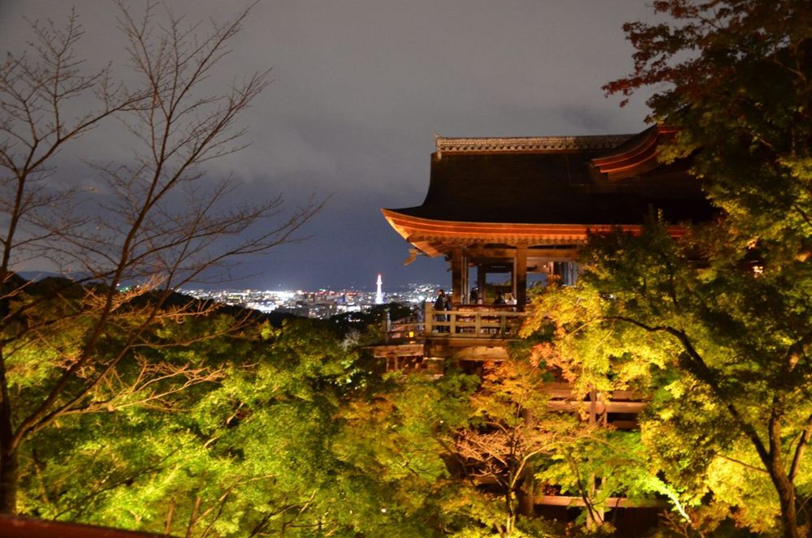
夜の清水寺
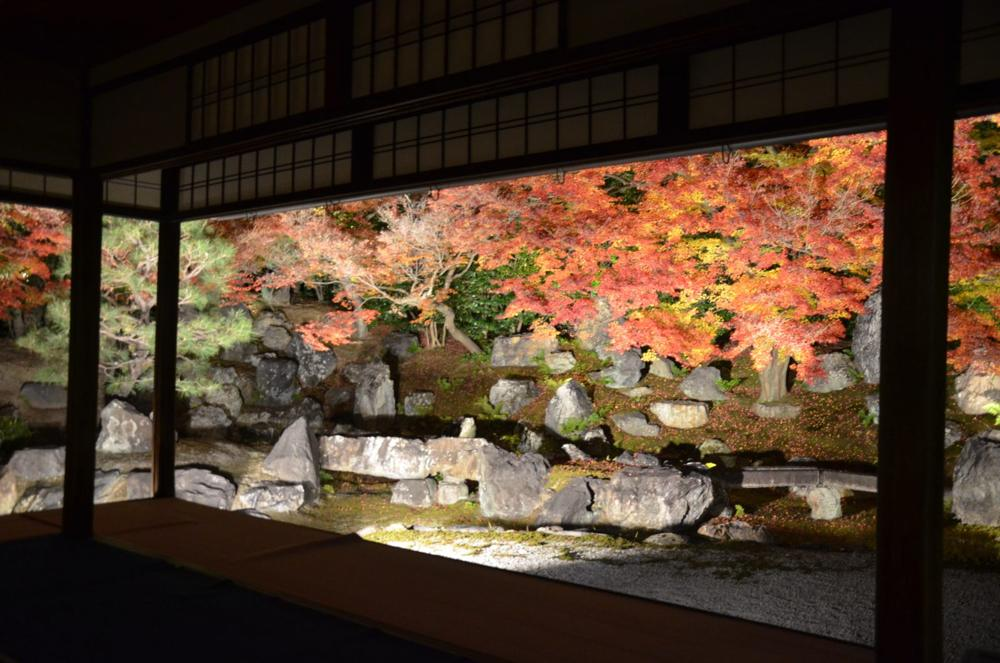
夜の高台寺
- 東福寺見頃落葉はじめ 12/6ごろ
- 今熊野観音寺見頃落葉はじめ 12/5ごろ。境内は無料で静か
- 建仁寺26日ごろ見頃入り落葉はじめ 12/10ごろ
- 清水寺見頃落葉はじめ 12/5ごろ
- 高台寺見頃落葉はじめ 12/14ごろ
1日の流れ
- 烏丸御池 → 地下鉄で京都、JR奈良線 11:17 東福寺着・370円
- 東福寺 通天橋 通天橋1,000円（本坊庭園は別）。昼はいちばん混む時間なので、橋の上は流れに沿って
- 今熊野観音寺 東福寺から歩いて約15分。朱い橋と紅葉。無料で人が少ない穴場
- 市バス206東山七条 → 東山安井 泉涌寺道から東山七条まで歩いて約10分。13:46着・230円
- お昼：ぎをん 権兵衛（うどん・親子丼） 11:30〜20:00・木曜休み・1,000〜2,000円。または いづう（鯖寿司の老舗、11:00〜22:00・火曜休み・2,500〜4,000円）
- 建仁寺 双龍図と潮音庭。拝観料は要確認
- 八坂の塔・二年坂・産寧坂を歩いて清水へ 夕暮れの坂道。どこかでお茶
- 清水寺 夜間特別拝観（最終日） 17:30〜、受付21:00まで・500円。予約不要。成就院の庭（18:00〜、受付20:30まで・600円）も見られます
- 晩ごはん：十二段家 本店（しゃぶしゃぶ） 夜17:00〜、ラストオーダー20:00・水木休み・6,000円〜・予約可。軽めなら いづう や祇園の おかる（カレーうどん、深夜まで・不定休）
- 高台寺 ライトアップ 最終受付21:30・800円（圓徳院と共通券1,200円）。方丈前庭のプロジェクションマッピングと臥龍池
- 歩いて三条京阪（約15分）、東西線 22:08発 → 22:11 烏丸御池着・220円
最終日の清水寺はかなり混みます。坂の途中で入場待ちになることも。高台寺を先（17:00点灯）にして、清水寺を後にする順でもOK（清水寺の受付は21:00まで）。
B穴場・秋だけ開く小さな寺
哲学の道：南禅寺 → 霊鑑寺 → 安楽寺 → 法然院 → 真如堂 → 夜の金戒光明寺・永観堂
南禅寺から北へ歩きながら、秋だけ扉を開ける小さなお寺を回ります。真如堂は24日に「盛り」の便り。夜は金戒光明寺と永観堂をはしごして、祇園で晩ごはん。余力があれば最後に青蓮院。
- 出発
- 烏丸御池 11:00
- 帰り
- 烏丸御池 21:48着
- 交通費
- 670円
- 拝観料
- 約2,500円＋α
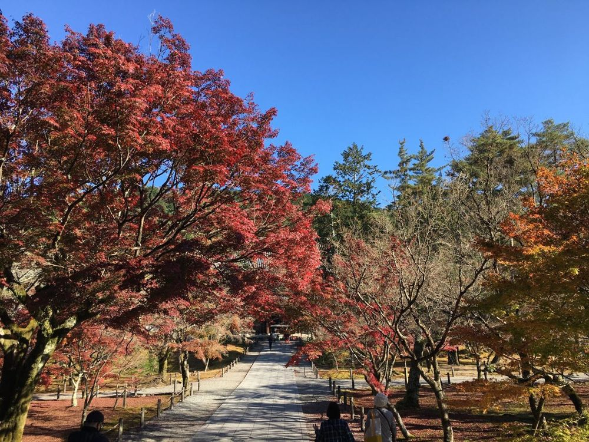
南禅寺
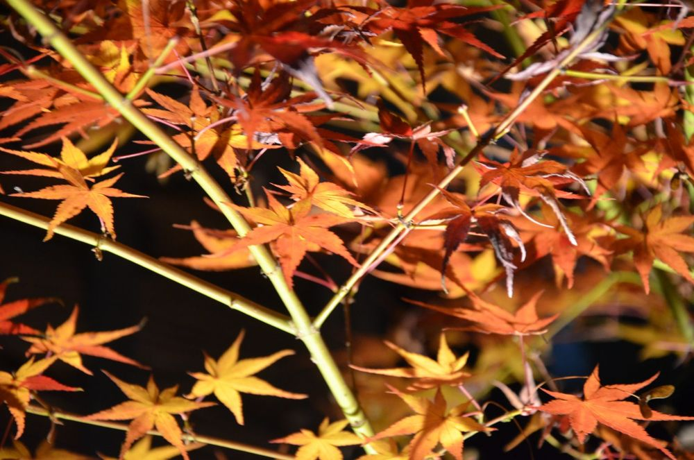
夜の金戒光明寺
 夜の永観堂
夜の永観堂
- 南禅寺見頃落葉はじめ 12/4ごろ
- 霊鑑寺今年の色づき情報なし秋の特別公開 11/20〜12/6。例年は11月下旬〜12月上旬が見頃
- 安楽寺今年の色づき情報なし11/21〜12/6は毎日公開（ふだんは限られた日だけ）
- 真如堂見頃24日に「盛り」の便り
- 金戒光明寺今年の色づき情報なし夜のライトアップあり
- 永観堂見頃落葉はじめ 12/5ごろ
1日の流れ
- 烏丸御池 → 東西線（乗りかえなし） 11:07 蹴上着・220円
- 南禅寺 三門・水路閣 境内は無料、三門600円
- お昼：南禅寺 順正（湯豆腐） 11:00〜・3,000円台〜・予約可。定休日がサイトによって「水曜」「不定休」と違うので電話で確認（075-761-2311）。代わりは岡崎の 山元麺蔵（うどん・水曜休み・行列が長いので当日9時からの受付で予約）
- 霊鑑寺 秋の特別公開 「椿の寺」の書院と庭。哲学の道の南の端から歩いて約10分。時間・拝観料は要確認
- 安楽寺 10:00〜16:00・500円。石段の参道と茅葺きの山門の紅葉
- 法然院 境内は無料。苔の茅葺き山門と白砂壇
- 真如堂 三重塔と紅葉。境内は無料、本堂・庭園は有料（受付は16時ごろまでの見込み、要確認）
- すぐ南の金戒光明寺の境内で夕暮れを待つ 文殊塔からは京都の街が見渡せます
- 金戒光明寺 ライトアップ 17:30〜、最終入場20:00・1,000円
- 永観堂 ライトアップ 歩いて約15分。受付20:30まで・1,000円。放生池に映る紅葉
- 市バス5南禅寺・永観堂道 → 東山三条 19:57着・230円
- 晩ごはん：いづう（祇園の鯖寿司） 22:00まで・火曜休み・店内は予約不可。または祇園の おかる（カレーうどん）、ぎおん あじ処 風小僧（おばんざい、24時まで・日祝休み）
- （おまけ）青蓮院 夜間拝観 受付21:30まで。青い光の庭。料金は1,000円か1,500円（要確認）
- 地下鉄 東山 → 東西線 21:48 烏丸御池着・220円
哲学の道の区間は歩いて約2km。ずっと平らで歩きやすい道です。
真如堂の夜は一般の夜間拝観がなく、早朝の貸切拝観だけです。夜は金戒光明寺へ。
C庭の紅葉・晩ごはんは烏丸御池の近く
洛北：一乗寺ラーメン → 北山別院 → 圓光寺 → 詩仙堂 → 曼殊院 → 夜の府立植物園
座って眺める庭の紅葉が中心。お昼は一乗寺のラーメン。夜は府立植物園の「NIGHT GARDEN」。帰りは地下鉄1本で烏丸御池に戻って、近くで晩ごはん。最後の移動がいちばん楽なコースです。
- 出発
- 烏丸御池 11:00
- 帰り
- 烏丸御池 19:49着
- 交通費
- 1,170円
- 拝観料
- 約1,800円＋α
 圓光寺（写真は紅葉の前）
圓光寺（写真は紅葉の前）
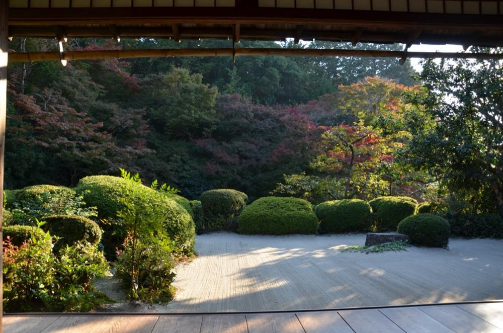
詩仙堂（写真は紅葉の前）
- 本願寺北山別院見頃20日に「すごく綺麗」の便り。無料・入れるのは10〜14時
- 圓光寺見頃落葉はじめ 12/5ごろ
- 詩仙堂見頃落葉はじめ 12/4ごろ
- 曼殊院見頃の終わりかけ落葉はじめ 12/4ごろ
- 府立植物園見頃落葉はじめ 12/9ごろ
1日の流れ
- 烏丸御池 → 東西線で三条京阪、京阪で出町柳、叡電 11:35 一乗寺着・680円
- お昼：中華そば 高安 11:30〜・不定休・約1,000円・行列。または 天下一品 総本店（こってりの発祥の店、11:00〜・無休）
- 本願寺北山別院 無料。保育園の送り迎えがあるので、入れるのは10〜14時だけ
- 圓光寺 紅葉の時期（11/10〜12/10）は日時指定の予約制。13時台で3人分を予約
- 詩仙堂 すぐ近く。700円
- 曼殊院 歩いて約20分。書院と枯山水の庭。拝観料は要確認
- 赤山禅院 歩いて約10分。無料。紅葉の参道。修学院道のバス停まで歩いて約15分
- 市バス北8修学院道 → 北山駅前 16:38 北山着・230円。北山通りのカフェでひと休み
- 府立植物園 NIGHT GARDEN 18:00〜、最終入場20:30・平日1,100円。手持ちのランタンは別に1,500円
- 北山 → 地下鉄烏丸線（乗りかえなし） 19:49 烏丸御池着・260円
- 晩ごはん：はふう 本店（肉料理・洋食） 17:30〜、ラストオーダー21:30・水曜休み・5,000〜8,000円・夜は予約を。気軽にするなら烏丸御池駅から歩いて2分の 蒸キゲン（蒸し料理、23:00まで、要確認）
圓光寺は予約しないと入れないことがあります。このコースに決まったら、すぐ予約します。
北山まで行かず、修学院から叡電の「もみじのトンネル」（市原〜二ノ瀬、日没から点灯・12/6まで）を往復する手もあります。ただし22日に「色づきが終わりつつある」との便りがあり、28日の雨のあとは散っているかもしれません。
D嵐山の人ごみを外して
嵯峨：鹿王院 → 嵐山でお昼 → 常寂光寺 → 二尊院 → 宝筐院・清凉寺 → 夜の宝厳院
嵐山の全体は30日ごろから散り始める予想ですが、ここで回るお寺はまだ見頃。人の少ない鹿王院から入って、嵯峨の奥の静かな寺へ。夜は宝厳院の「獅子吼の庭」のライトアップ。
- 出発
- 烏丸御池 11:02
- 帰り
- 烏丸御池 21:33着
- 交通費
- 930円
- 拝観料
- 約3,400円
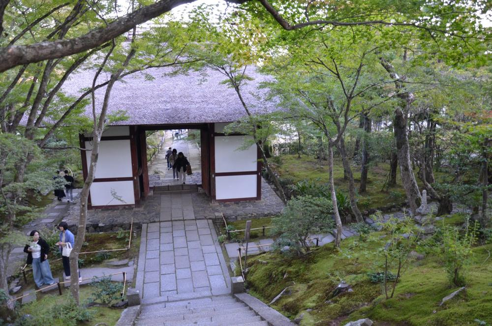
常寂光寺（写真は紅葉の前）
 二尊院・紅葉の馬場
二尊院・紅葉の馬場
- 鹿王院25日ごろ見頃入り落葉はじめ 12/9ごろ
- 常寂光寺見頃落葉はじめ 12/10ごろ
- 二尊院見頃落葉はじめ 12/7ごろ
- 宝筐院見頃24日にお寺が「見頃」と発表。落葉はじめ 12/5ごろ
- 清凉寺見頃落葉はじめ 12/6ごろ
- 宝厳院見頃落葉はじめ 12/11ごろ
1日の流れ
- 烏丸御池 → 東西線で太秦天神川、嵐電 11:34 鹿王院着・510円
- 鹿王院 800円。山門から続くもみじの参道と、嵐山を借景にした庭
- 歩いて嵐山へ（約15分）
- お昼：西山艸堂（天龍寺の塔頭で湯豆腐） 11:30〜17:00・約3,300円・15席だけ。定休日は「水曜と月1回の火曜」（古い情報なので要確認）。または 嵐山よしむら（渡月橋が見えるそば屋・無休・行列）
- 常寂光寺 竹林の小径を抜けて。600円
- 二尊院 紅葉の馬場。500円・16:30閉門
- 宝筐院・清凉寺 宝筐院500円（16:00ごろまで、紅葉の時期は16:30までとの情報も）。三脚・一脚を持っていると入れません。清凉寺は境内無料
- 歩いて嵐山へ戻る（約25分） 夕暮れの渡月橋
- 宝厳院 夜間特別拝観 17:30〜、受付20:00まで・1,000円。昼とは入れかえ制
- 晩ごはん：嵐山 喜重郎（京料理・ステーキ） ラストオーダー19:30・無休・5,000円〜・予約可。ゆっくり飲むならJR嵯峨嵐山駅前の 串龍（串揚げ・鯨料理、24時まで・水曜休み・3,000円〜）
- JR嵯峨嵐山 → 二条で東西線 21:33 烏丸御池着・420円
嵐山の中心（渡月橋・天龍寺のまわり）は30日ごろから散り始める予想。28日の雨しだいでは、このコースの確実さは少し下がります。
嵯峨野トロッコの「光の幻想列車」（夕方以降の列車でライトアップの渓谷を走る）を足す手もあります。乗車の1か月前から発売で、当日は満席のことが多いです。
E限定公開と夜のはしご
妙心寺・衣笠・北野：大法院 → 退蔵院 → 龍安寺で湯豆腐 → 等持院 → 北野もみじ苑 → 夜の二条城
妙心寺の中の大法院は12月5日までの限定公開。龍安寺の境内で湯豆腐を食べて、等持院の池の庭へ。日暮れは北野天満宮のもみじ苑で、昼から夜に変わる紅葉を。最後は烏丸御池から1駅の二条城の夜。
- 出発
- 烏丸御池 11:02
- 帰り
- 烏丸御池 21:50着
- 交通費
- 1,290円
- 拝観料
- 約4,500円＋α
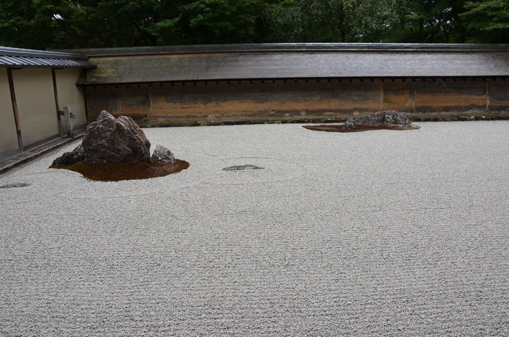
龍安寺の石庭
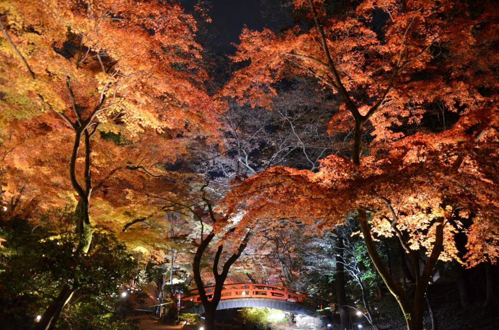
北野天満宮・もみじ苑の夜
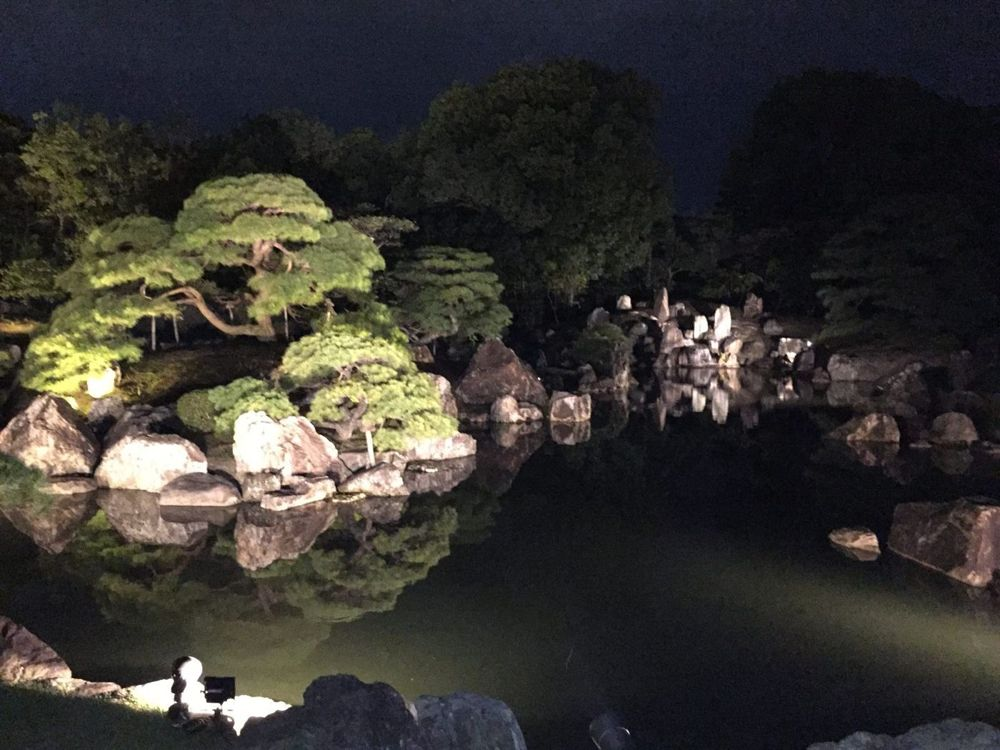
夜の二条城
- 妙心寺 大法院見頃特別公開 12/5まで
- 退蔵院12/1ごろ見頃入り24日は3割。30日は見頃の手前かも
- 龍安寺見頃落葉はじめ 12/11ごろ
- 等持院見頃落葉はじめ 12/6ごろ
- 北野天満宮 もみじ苑見頃落葉はじめ 12/11ごろ
- 二条城見頃落葉はじめ 12/6ごろ
1日の流れ
- 烏丸御池 → 東西線で二条、JR嵯峨野線 11:23 花園着・370円
- 妙心寺 大法院 9:00〜16:00・1,000円（抹茶付き）。露地庭園の紅葉
- 退蔵院 枯山水「元信の庭」と池泉の庭。拝観料は要確認
- 妙心寺の北門から歩いて龍安寺へ（約15分）
- お昼：龍安寺 西源院（湯豆腐・精進料理） 龍安寺の境内（拝観料が必要）。11:00〜15:30ごろ・2,000〜3,300円。定休日は「水木」と「なし」の情報があるので電話で確認（075-462-4742）。高めでよければ妙心寺の門前の 阿じろ（精進料理・水曜休み・4,000円台〜・予約制）
- 龍安寺 石庭・鏡容池 拝観料は要確認
- 等持院 歩いて約20分。足利家の寺。池のまわりの紅葉。拝観料は要確認
- 嵐電 等持院 → 北野白梅町、歩いて北野天満宮 250円
- 北野天満宮 もみじ苑 1,500円（お茶とお菓子付き）。昼と夜の入れかえなしなので、明るいうちに入って日没（16:45ごろ）からのライトアップまで。受付19:40まで
- 晩ごはん：上七軒 文楽（花街の懐石） 17:30〜、ラストオーダー20:00・日祝休み・6,000円〜・予約を。気軽にするなら北野白梅町駅前の アホウどり（炭火焼鳥、18:00〜・無休・3,000〜4,000円）
- 市バス205北野白梅町 → 市バスと地下鉄東西線 20:18 二条城前着・450円
- NAKED meets 二条城 最終入場21:00・月〜木は2,000円。チケットはローチケ。荒天で中止のことあり
- 二条城前 → 東西線 21:50 烏丸御池着・220円
二条城はなくてもOK。その場合は上七軒でゆっくりして、市バス50で21時すぎに烏丸御池へ。
仁和寺の「紅葉雲海」は金・土・日・祝だけなので、30日（月）はありません。
F東西線1本・落葉がいちばん遅いエリア
山科・醍醐：毘沙門堂 → 山科でお昼 → 勧修寺 → 隨心院 → 夜の醍醐寺
行きも帰りも東西線1本。勧修寺は落葉はじめが12/15ごろと、京都でいちばん遅い組。夜は醍醐寺の秋期夜間拝観で、弁天堂の池に映る紅葉を。事前予約が必要です。
- 出発
- 烏丸御池 11:00
- 帰り
- 烏丸御池 21:28着
- 交通費
- 1,040円
- 拝観料
- 約2,000円＋α
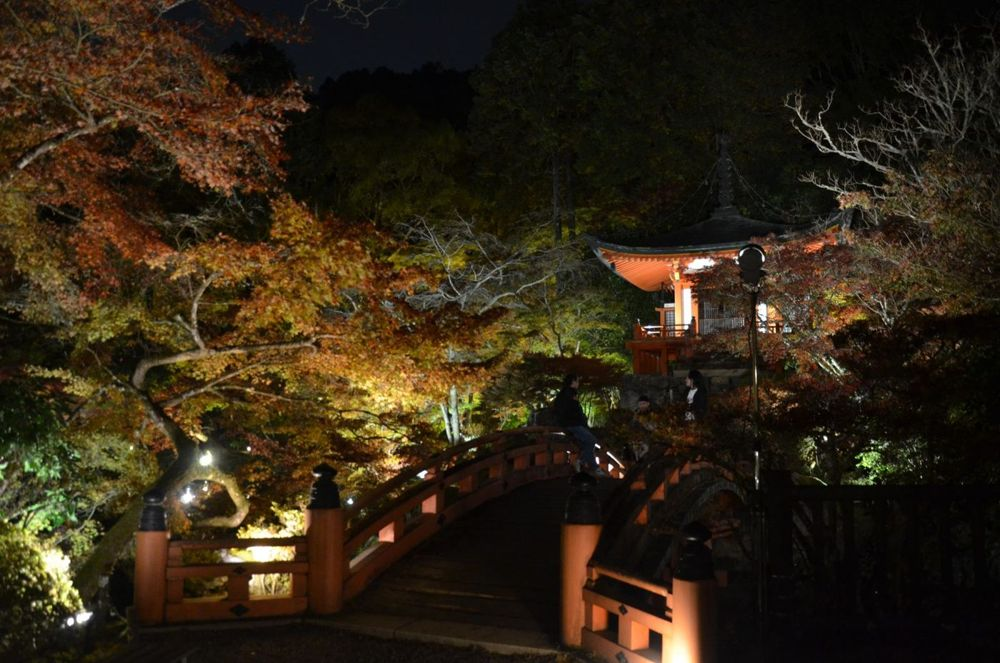
夜の醍醐寺・弁天堂
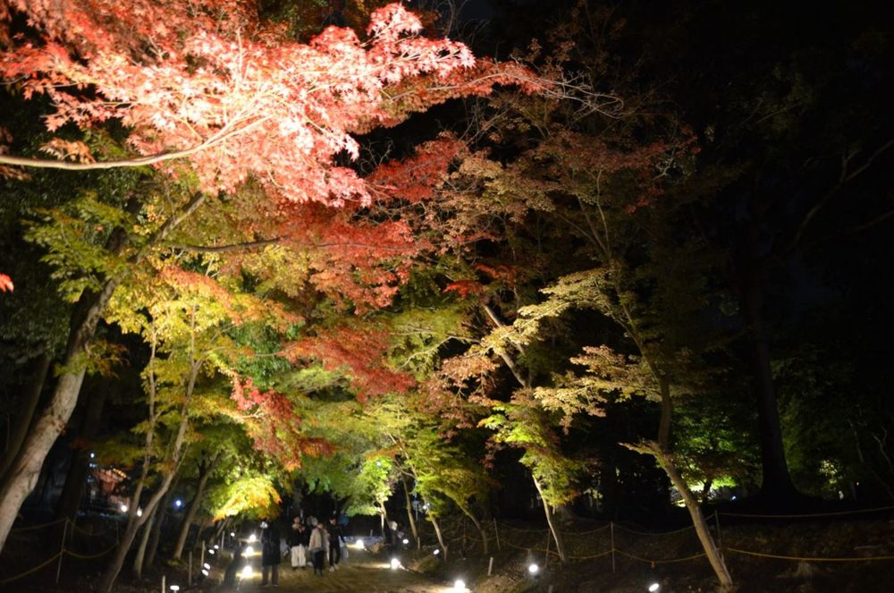
夜の醍醐寺
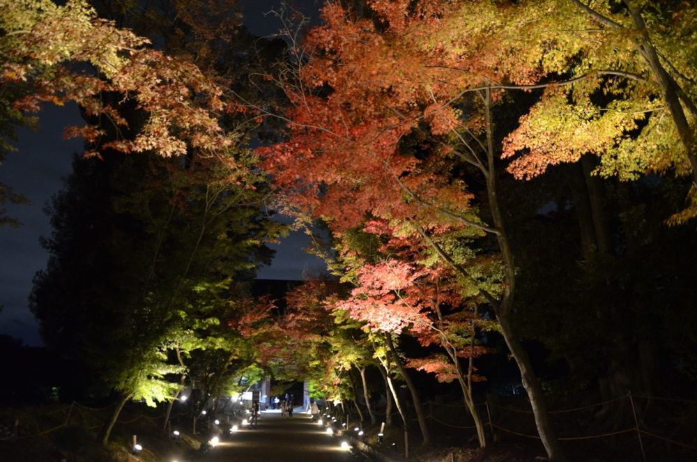
醍醐寺の参道
- 毘沙門堂見頃落葉はじめ 12/6ごろ。勅使門前の敷きもみじ
- 勧修寺見頃落葉はじめ 12/15ごろ
- 隨心院26日ごろ見頃入り落葉はじめ 12/8ごろ。工事中で見られない所があるかも
- 醍醐寺見頃落葉はじめ 12/9ごろ
1日の流れ
- 烏丸御池 → 東西線（乗りかえなし） 11:13 山科着・260円
- 毘沙門堂 歩いて約20分。受付16:00〜16:30まで。拝観料は700円・1,000円の情報があり、紅葉の時期は入山料が別に要るとの情報も（要確認）
- お昼：担担麺 胡（山科駅近く） 11:00〜15:00・火曜休み・約1,000円・行列店（情報が少ないので要確認）。山科駅前の商業施設の店でも
- 山科 → 東西線 13:41 小野着・260円
- 勧修寺 氷室池をめぐる庭。拝観料は要確認
- 隨心院 小野小町ゆかりの寺。9:00〜16:30・500円。奥書院の工事中（夜間拝観は今年は休止）
- 歩いて醍醐へ（約20分） 醍醐駅直結の「パセオダイゴロー」でひと休み・軽く腹ごしらえ
- 醍醐寺 秋期夜間拝観 18:00〜、受付20:10まで・1,500円。事前予約（クレジットカード決済・キャンセル不可）。弁天堂・五重塔・仁王門のライトアップ
- 醍醐 → 東西線 19:56 御陵着・260円
- 晩ごはん：来山軒（御陵の町中華） 夜17:30〜23:30・日曜休み・約1,000円（情報が少ないので要確認）。または烏丸御池まで戻って Cの店で
- 御陵 → 東西線 21:28 烏丸御池着・260円
醍醐寺の夜は予約制です。このコースに決まったら、すぐ3人分を予約します（当日券があるかは未確認）。
このエリアは月曜に開いている「ここ」という店が見つけきれていません。お昼・晩ごはんは要相談。
Gお茶の町と京都駅の夜
宇治：平等院 → 茶そば → 興聖寺の琴坂 → 夜の天得院 → 夜の東寺 → 京都駅で晩ごはん
昼は宇治で平等院とお茶。興聖寺の琴坂は30日ごろちょうど見頃入りの予想。夕方に戻って、東福寺の塔頭・天得院と東寺の五重塔のライトアップ。晩ごはんは京都駅で、帰りは地下鉄1本。
- 出発
- 烏丸御池 11:01
- 帰り
- 烏丸御池 21:21着
- 交通費
- 1,250円
- 拝観料
- 約2,800円
- 平等院見頃落葉はじめ 12/6ごろ
- 興聖寺（琴坂）30日ごろ見頃入り24日は3割
- 東福寺 天得院今年の色づき情報なし東福寺は見頃・落葉はじめ 12/6ごろ
- 東寺見頃落葉はじめ 12/13ごろ
1日の流れ
- 烏丸御池 → 地下鉄で京都、JR奈良線 11:37 JR宇治着・460円
- 平等院 700円。鳳凰堂の中は別に300円（先着順の受付）
- お昼：中村藤吉本店（茶そば・抹茶スイーツ） 10:00〜17:30・無休・1,500〜2,500円。整理券制になるほど混むので、先に整理券を取ってから平等院へ行くのも手。入りやすいのは 伊藤久右衛門 本店茶房（10:00〜18:00）
- 興聖寺 琴坂 宇治川の中の島を渡って。琴坂を歩くだけなら無料、拝観500円（受付16:00まで）
- 宇治上神社 世界遺産・無料。そのあと宇治川沿いでお茶
- JR宇治 → JR奈良線 16:40 東福寺着・240円
- 天得院 ライトアップ 16:00ごろ点灯、拝観20:00まで・600円。桔梗の寺の小さな庭
- 東福寺 → JRで京都、近鉄 18:07 東寺着・330円
- 東寺 夜間特別公開 18:00〜、受付21:00まで・1,000円。池に映る五重塔。金堂・講堂にも入れます
- 晩ごはん：鳥せい 京都タワーサンド店（伏見の酒蔵の直営・焼鳥） 東寺から京都駅まで歩いて約15分。ラストオーダー22:00・無休・3,000〜4,000円。おばんざいなら 六角や 京都駅前店（ラストオーダー21:30・無休）
- 京都 → 地下鉄烏丸線 21:21 烏丸御池着・220円
平等院のライトアップは今年は行われません。宇治は昼だけのコースです。
京都駅の北の東本願寺・渉成園でも「NAKED GARDEN NIGHTS」（最終入場21:00）があります。晩ごはんの前後に足せます。
H滋賀・近い・夜のライトアップは無料
大津・坂本：鰻のお昼 → 三井寺 → 西教寺 → 坂本の石垣の町 → 夜の日吉大社
烏丸御池から乗りかえなしの電車で滋賀へ。名物の「きんし丼」でお昼、三井寺の紅葉、琵琶湖を見下ろす西教寺、石垣の町・坂本。夜は日吉大社のライトアップ（夜は無料）。帰りも乗りかえなしで烏丸御池へ。
- 出発
- 烏丸御池 11:18
- 帰り
- 烏丸御池 21:32着
- 交通費
- 1,760円
- 拝観料
- 約1,300円
 三井寺・観音堂からの眺め（写真は春の夜）
三井寺・観音堂からの眺め（写真は春の夜）
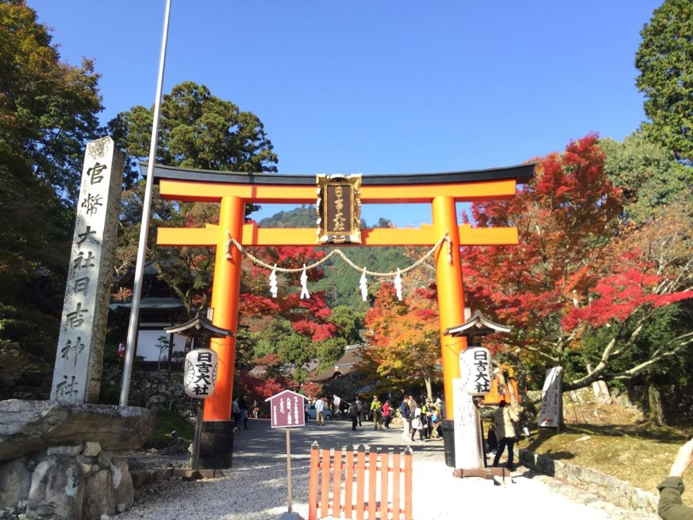
日吉大社
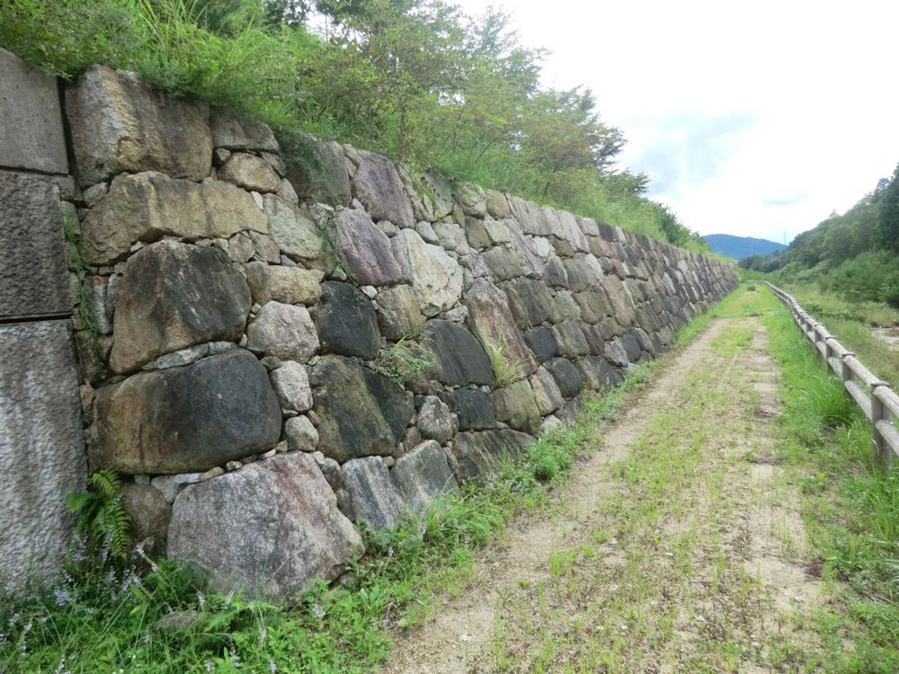
坂本の石垣（写真は夏）
- 三井寺見頃落葉はじめ 12/6ごろ
- 西教寺見頃の終わりかけ落葉はじめ 12/1ごろ
- 日吉大社散り始め落葉はじめ 11/29ごろ。参道の散りもみじがきれいな時期
1日の流れ
- 烏丸御池 → 東西線から京阪京津線に直通（乗りかえなし） 11:36 大谷着・460円
- お昼：逢坂山 かねよ 本店（鰻） 名物は大きな卵焼きをのせた「きんし丼」。11:00〜20:30・木曜休み・3,000円〜・予約可（077-524-2222）
- 大谷 → 京阪京津線 13:01 びわ湖浜大津着・200円。歩いて三井寺へ（約10分）
- 三井寺 800円・受付16:00まで。観音堂から大津の街と琵琶湖。三井の晩鐘
- 京阪 三井寺 → 石山坂本線 15:00 坂本比叡山口着・280円
- 西教寺 タクシーで約5分（歩くと約25分）。500円・受付16:30まで。明智光秀の菩提寺、琵琶湖を見下ろす庭
- 坂本の町を歩く 穴太衆積みの石垣と、里坊の並ぶ道
- 日吉大社 ライトアップ 17:00〜20:00・夜は無料。散りもみじの参道と石橋
- 坂本比叡山口 → 石山坂本線 18:43 びわ湖浜大津着・280円
- 晩ごはん：駅前酒場 御蔵（滋賀の地酒・湖魚） 浜大津駅から歩いて2分。17:30〜23:30・3,000円台・予約可（077-522-0022）。定休日は要確認。JR大津駅前の 御肴 かわせみ（鮮魚と地酒・16:00〜23:00・無休・4,000円前後）も
- びわ湖浜大津 → 京津線から東西線に直通（乗りかえなし） 21:32 烏丸御池着・540円
坂本の名物そば「本家 鶴㐂そば」は16時まで、しかも「最終月曜が休み」という情報があります（30日は11月の最終月曜）。寄るなら電話で確認を。
日吉大社は30日には散り始めの予想。紅葉の「盛り」を見たいなら、ほかのコースのほうが確実です。石山寺と三井寺の夜間拝観は、30日には行われません。
I遠出・30日にいちばん色がいい滋賀
東近江：近江八幡で近江牛 → 湖東三山の百済寺 → 夜の教林坊 → 草津で晩ごはん
近江八幡で近江牛のお昼。近江鉄道とタクシーで、山の中の百済寺へ（24日に7〜8割、落葉はじめ12/11）。夜は安土の教林坊で、竹林と丸窓のライトアップ。帰りは草津で地酒と晩ごはん。
- 出発
- 烏丸御池 11:01
- 帰り
- 烏丸御池 21:43着
- 交通費
- 3,060円＋タクシー
- 拝観料
- 約1,600円
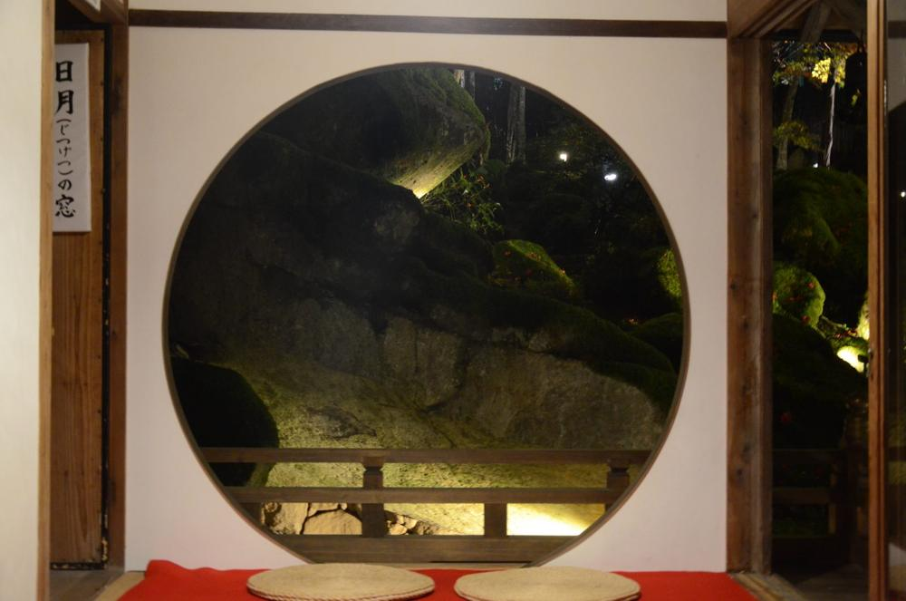
教林坊の丸窓（夜）
 教林坊のライトアップ
教林坊のライトアップ
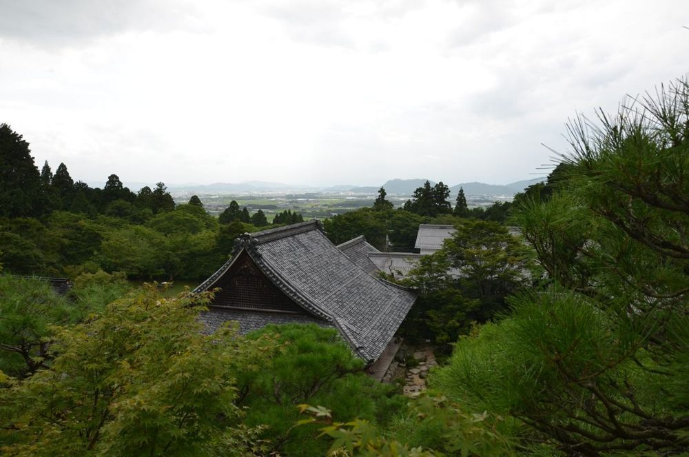
百済寺「天下遠望の庭」（写真は夏）
- 百済寺見頃24日は7〜8割。落葉はじめ 12/11ごろ
- 教林坊見頃25日ごろ見頃入り。落葉はじめ 12/9ごろ
1日の流れ
- 烏丸御池 → 地下鉄で京都、JR琵琶湖線 11:52 近江八幡着・900円
- お昼：特選近江牛レストラン ティファニー 駅の北口から歩いて3分、精肉店「カネ吉山本」の2階。11:30〜15:00・火曜休み・2,500円〜・予約を（0748-33-3055）
- 近江八幡 → 近江鉄道 13:45 八日市着・460円
- タクシーで百済寺へ（約20分） 湖東三山のシャトルバスは29日で終わり。運賃は片道4,000〜5,000円ほどの見込み（要確認、3人で割る）
- 百済寺 600円・受付16:30まで。石段の参道と、湖東平野を見渡す「天下遠望の庭」
- タクシーで八日市駅へ（迎えを予約）
- 八日市 → 近江鉄道で近江八幡、JR 16:56 安土着・650円
- タクシーで教林坊へ（約10分・片道2,500円前後）
- 教林坊 ライトアップ 17:30〜19:30（受付19:00まで）・1,000円。竹林と、茅葺きの書院の丸窓
- タクシーで安土駅へ（迎えを予約）
- 安土 → JRで近江八幡、新快速 19:20 草津着・420円
- 晩ごはん：近江酒場 万福（滋賀の地酒の居酒屋） 駅から歩いて2分。17:00〜翌0:00・無休・3,000〜4,000円・予約可（077-558-6117）。近江牛なら 近江屋 草津（18:00〜、ラストオーダー22:00・水曜休み・4,500円）
- 草津 → JR新快速で京都、地下鉄 21:43 烏丸御池着・630円
タクシーは台数が少ないので、八日市駅・百済寺・安土駅・教林坊の4回とも前もって予約します。タクシー代は全部で1台1万4千円前後の見込み（3人で割って1人5千円ほど）。
別の組み立て：百済寺の本坊庭園のライトアップが30日まで（平日17:00〜19:30）という情報があります。昼に教林坊（9:30〜16:30）、夜に百済寺にして、晩ごはんを八日市の 万葉（近江牛焼肉、ラストオーダー21:00・火曜休み）にする手も。ただし最終日は紅葉の具合で変わることがあり、お寺の発表は未確認です。
どれにする？行きたいコース（A〜I）を教えてね。2つを組み合わせたり、昼と夜を入れかえたりもOK。決まったら、予約が要る所（圓光寺・醍醐寺・お店・タクシー）をすぐ押さえて、地図つきのしおりにします。
30日の夜に開いている所（入れかえ用）
どのコースの夜とも入れかえられます。受付の締め切りが遅い順。
| 場所 | 受付の締め切り | 料金 | メモ |
|---|
| 高台寺 | 21:30 | 800円 | 圓徳院と共通券1,200円 |
| 青蓮院 | 21:30 | 1,000〜1,500円 | 料金は要確認 |
| 清水寺 | 21:00 | 500円 | 30日が最終日 |
| 知恩院 | 21:00 | 800円 | 三門の楼上（回廊）も |
| 東寺 | 21:00 | 1,000円 | 金堂・講堂も |
| 二条城 | 21:00 | 2,000円 | 烏丸御池から1駅。ローチケ |
| 東本願寺・渉成園 | 21:00 | 要確認 | 京都駅から歩いて10分。ローチケ |
| 智積院 | 20:40 | 1,500円〜 | 竹あかりと雲海の演出 |
| 永観堂 | 20:30 | 1,000円 | |
| 府立植物園 | 20:30 | 1,100円 | 地下鉄 北山 |
| 醍醐寺 | 20:10 | 1,500円 | 事前予約 |
| 金戒光明寺 | 20:00 | 1,000円 | |
| 宝厳院 | 20:00 | 1,000円 | 嵐山 |
| 天得院 | 20:00 | 600円 | 東福寺の塔頭 |
| 妙顕寺 | 20:00 | 800円 | 堀川寺ノ内 |
| 日吉大社（滋賀） | 20:00閉門 | 無料 | 坂本 |
| 北野天満宮もみじ苑 | 19:40 | 1,500円 | お茶とお菓子付き |
| 妙覺寺 法姿園 | 19:30 | 800円 | 鞍馬口 |
| 教林坊（滋賀） | 19:00 | 1,000円 | 安土 |
30日には行われないもの：石山寺「あたら夜もみじ」（29日まで）、玄宮園（29日まで）、永源寺（28日まで）、三井寺（抽選の日だけ）、貴船もみじ灯篭（24日まで）、平安神宮（29日まで）、梅小路公園（29日まで）、仁和寺「紅葉雲海」（金土日祝だけ）。平等院・隨心院・大原の宝泉院は今年は夜間をやりません。東福寺の夜間貸切拝観は「EX旅先予約」だけで買えます。
ほかの候補
- 上賀茂神社・今熊野観音寺・智積院・清凉寺 見頃。無料か安くて人が少ない。どのコースにも足しやすい
- 仁和寺 26日ごろ見頃入り、落葉はじめ12/14ごろ。Eに足せます（御殿の庭800円）
- 光明寺（長岡京） 見頃の終わりかけ、落葉はじめ12/3ごろ。紅葉の特別入山は9〜16時
- 瑠璃光院（八瀬） 12/6まで予約制・2,000円。机に映る紅葉。30日は見頃の終わりかけの見込み
- メタセコイア並木（高島・マキノ） 見頃（24日に7〜8割）。マキノ駅からタクシー約10分。京都から片道1時間半
- 鶏足寺（長浜・木之本） 見頃で散りもみじも。今年は紅葉の循環バスがなく、木ノ本駅からタクシー。京都から片道1時間半
- 胡宮神社・大池寺・湖南三山 見頃〜終わりかけの滋賀の穴場。バスが少なくタクシー向き
外した所：善峯寺・大原野神社（平日はバスがほとんどなく、駅から歩いて約50分）、嵐山の中心・泉涌寺・将軍塚・浄瑠璃寺（30日までに散り始める予想）、神護寺・宝泉院・比叡山（すでに落葉中）、源光庵・叡電もみじのトンネル（終わりかけ）。
決まったらすぐやること
- 予約 C：圓光寺（日時指定）とはふう。F：醍醐寺の夜。I：タクシー4回とティファニー。E：上七軒 文楽、二条城のチケット
- 電話で確認 月曜の営業と定休日が媒体によって違う店（順正・西源院・西山艸堂・御蔵 など）
- 29日の夜 28日の雨のあとの色づきを見て、最終決定。散っていたらコースを入れかえ